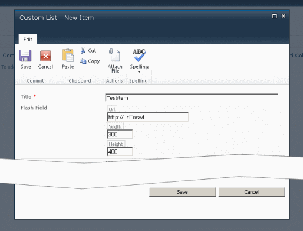

Sample: Field Type for Flash Movie |


|
|
|
Sample: Field Type for Flash Movie |
Sample for a custom field type to render a flash movie
As you store your business information in Windows SharePoint Services 3.0, you may encounter instances where your important business data does not conform to the field types included in Windows SharePoint Services, or situations where you want to further customize those general field types.
Windows SharePoint Services enables you to create custom field types.
These custom fields can include custom data validation and custom field rendering.
You can also customize the way that variable properties of your custom field types are processed and rendered when users set property variables and create new columns that are based on your custom field type.
This recipe adds a simple Field Type to your project.

| Name | Description |
|---|---|
| Field Type Name | Required Text. Name of the Field Type. Limited to 255 characters. The name has to be unique within the project of this solution. It should not contain whitespaces or special characters. |
| Description | Required Text. Longer description about the purpose of the field type (will be displayed in "Create Column" next to the field selector). |
| Display Name in column 'Type' | Required Text. The display name for this field type. |
|
Disclaimer: The views and opinions expressed in this documentation and in SPSF are those of the authors and do not necessarily reflect the opinions and recommendations of Microsoft or any member of Microsoft. All trademarks, service marks, collective marks, copyrights, registered names, and marks used or cited by this documentation are the property of their respective owners.
SharePoint Software Factory, Version 4.1.2.2904, GPLv2, see http://spsf.codeplex.com for more information |